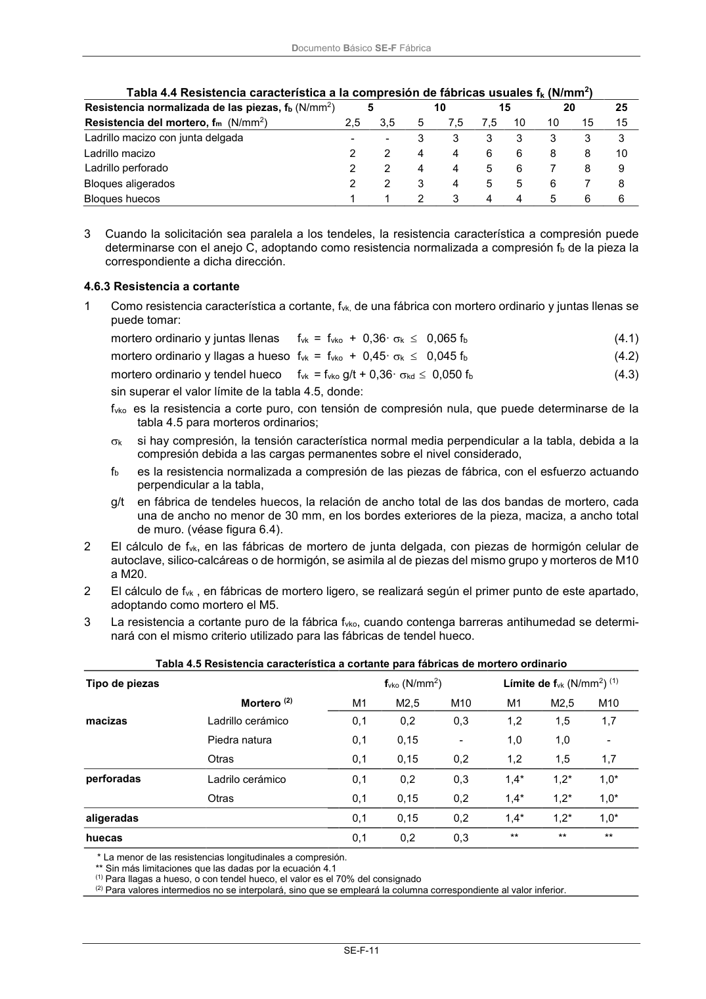

DB-SE-F Fábrica · edición 2019-12-20 · capa oficial
Documento DB-SE-F-oficial · SHA-256 del PDF e3e0805c3b4c307519c26dc34c3fdbf143d842edd013c91b0f52d2c73403d91c
Copia fiel del PDF fuente · Fuente oficial
Ficha de la disposición en la fuente oficial
Formatos: JSON del segmento · Markdown
4.6.2 Resistencia a compresión 1 Se define resistencia característica a la compresión de la fábrica, fk, a la que puede determinarse mediante ensayos sobre probetas de fábrica según los criterios que se indican en las normas UNE- EN 1052-1:1999, UNE-EN 1052-2:2000, UNE-EN 1052-3:2003 y UNE-EN 1052-4:2001. Por tratarse de un material que no es isótropo, la resistencia se refiere a la dirección en que actúa el esfuerzo. 2 La resistencia característica a la compresión de la fábrica, fk, correspondiente a un esfuerzo normal a los tendeles, se podrá tomar por referencia a los valores de la tabla 4.4, que recoge los casos más usuales, o en general, deducirla de las expresiones del Anejo C. Documento Básico SE-F Fábrica SE-F-11 Tabla 4.4 Resistencia característica a la compresión de fábricas usuales fk (N/mm2) Resistencia normalizada de las piezas, fb(N/mm2) 5 10 15 20 25 Resistencia del mortero, fm (N/mm2) 2,5 3,5 5 7,5 7,5 10 10 15 15 Ladrillo macizo con junta delgada - - 3 3 3 3 3 3 3 Ladrillo macizo 2 2 4 4 6 6 8 8 10 Ladrillo perforado 2 2 4 4 5 6 7 8 9 Bloques aligerados 2 2 3 4 5 5 6 7 8 Bloques huecos 1 1 2 3 4 4 5 6 6 3 Cuando la solicitación sea paralela a los tendeles, la resistencia característica a compresión puede determinarse con el anejo C, adoptando como resistencia normalizada a compresión fb de la pieza la correspondiente a dicha dirección.
